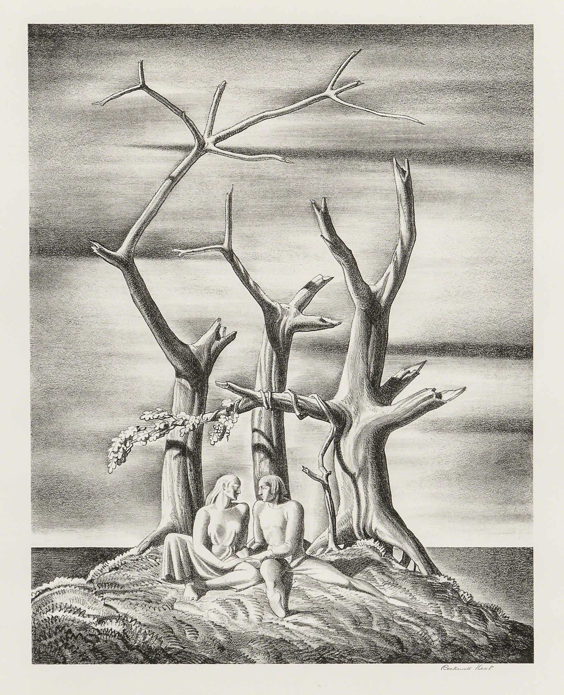
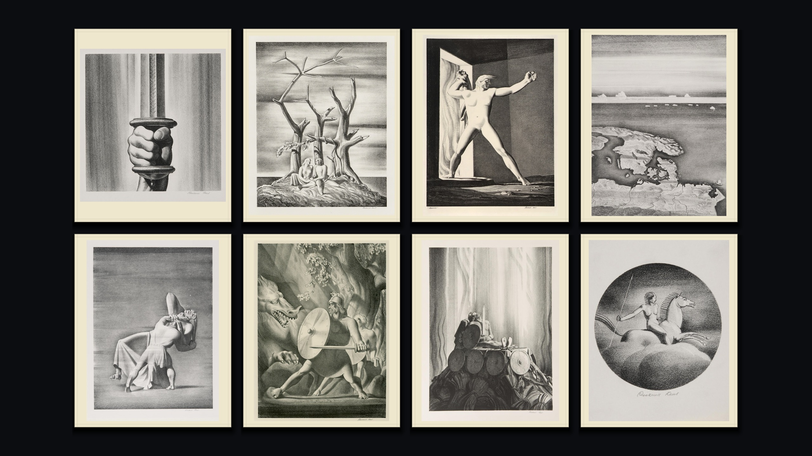
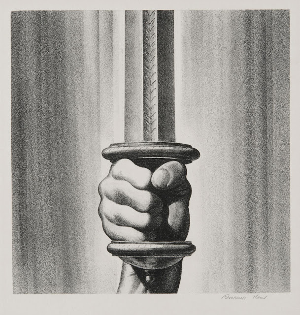
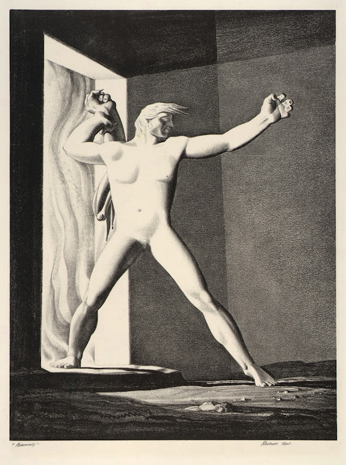
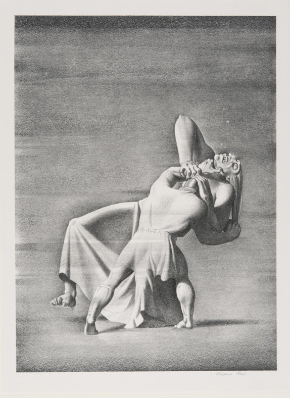
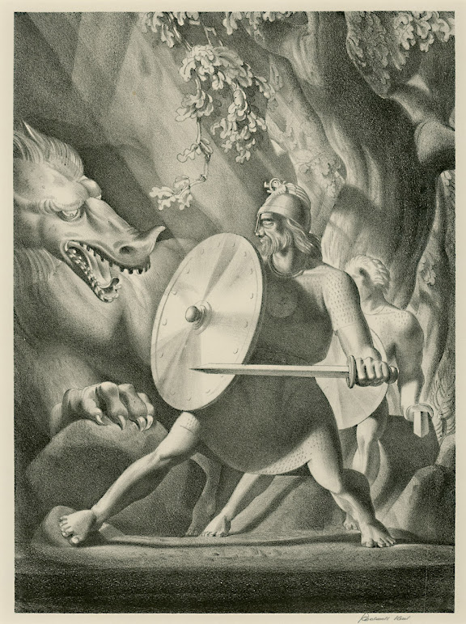
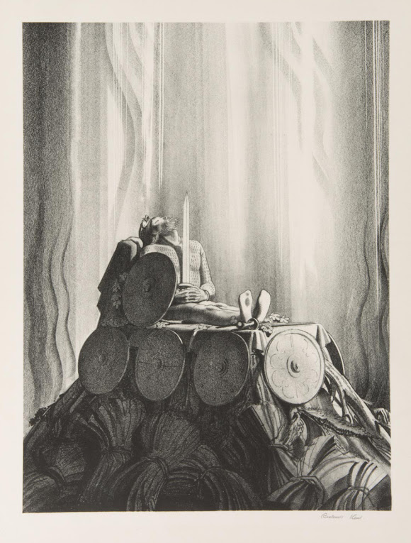
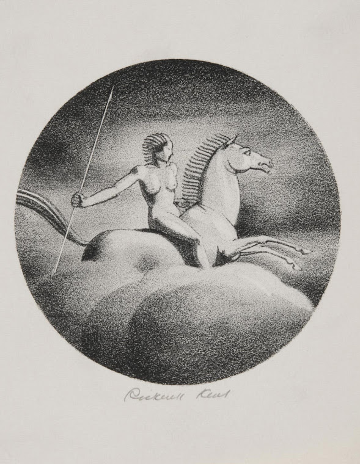

01
Genealogical Tree
“Famed was this Beowulf: far flew the boast of him,
son of Scyld, in the Scandian lands.”

With thanks to Professor Justin A. Jackson of Hillsdale College for his superb reading. ↗
Prints from Rockwell Kent’s Beowulf series are held in the Philadelphia Museum of Art’s collection.

“Famed was this Beowulf: far flew the boast of him,
son of Scyld, in the Scandian lands.”
“Then moved o’er the waters by might of the wind
that bark like a bird with breast of foam,”

“Seized then its chain-hilt the Scyldings’ chieftain,
bold and battle-grim, brandished the sword,”

“when the hardy-in-fight a hand laid down,
arm and shoulder, — all, indeed,
of Grendel’s gripe, — ’neath the gabled roof.”

“Seized then by shoulder, shrank not from combat,
the Geatish war-prince Grendel’s mother.”

“So had they killed it, kinsmen both,
athelings twain: thus an earl should be
in danger’s day!”

“and they laid amid it the mighty chieftain,
heroes mourning their master dear.”

“Then about that barrow the battle-keen rode,
atheling-born, a band of twelve,
lament to make, to mourn their king,
chant their dirge, and their chieftain honor.”